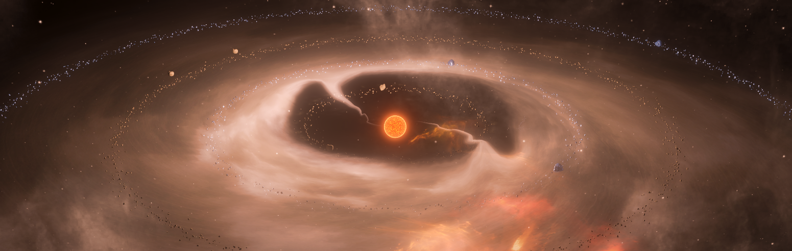

-

Dr Kim Pouilly
Astrophysicist - SNSF Postdoctoral Fellow - Geneva University

About me
My name is Kim Pouilly, I am a young researcher in the field of Astronomy and Astrophysics. My research domain is the variability of young stars, including accretion and magnetism. I am an expert of spectropolarimetric time series analysis. After a PhD in Grenoble (France) at the Institut de Planétologie et d'Astrophysique de Grenoble (IPAG), I moved to Uppsala University (Sweden) as a PostDoc researcher at the department of Physics and Astronomy of Ångströmlaboratoriet. I am now an SNSF Fellow at Geneva University.